← Índice de los 69 tutes de IDA
Tute 12 · Práctica: TEST_REVERSER
▶ video afín (mismo autor, en x64dbg): «16 Ejercicio 3 - Análisis Dinámico y Estático» · se conecta con: Herramientas · IDA · Instrucciones · Flujo · Debugger · Números
INTRODUCCIÓN AL REVERSING CON IDA PRO DESDE CERO PARTE 12.
PRACTICA TEST_REVERSER.
Bueno para no ir aburriendo, vamos a ir mezclando con ejercicios, en este caso es otro compilado por mí que se llama TEST_REVERSER.exe y que es muy sencillo, pero nos ayudara a ver algunas cositas nuevas en reversing estático y a chequearlas debuggeando.
Si lo ejecutamos fuera de IDA vemos.
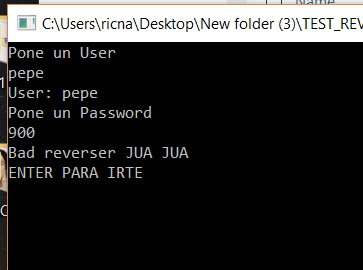
Nos pide un User y luego un password y luego nos dice que somos un asco y se nos caga de risa jeje.
Abrámoslo en IDA para ir viéndolo estáticamente.
Como no le puse símbolos la cosa se ve más fea.
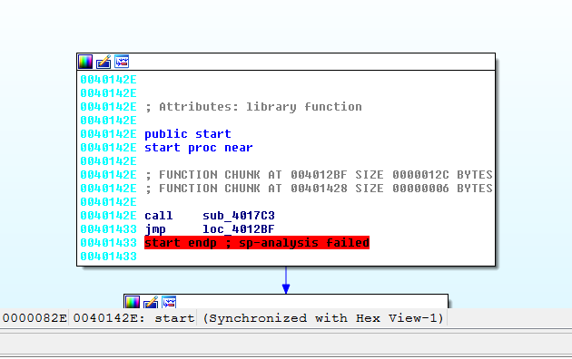
No nos abre en el main obviamente, sino en el ENTRY POINT pero bueno, la realidad casi siempre es así y nos arreglaremos como sea.
Una de las formas como ya vimos de llegar a la parte caliente es buscar strings ya sabemos cómo hacer eso, también en estos programas de C++ de consola, una forma de hallar el main que casi siempre funciona es la siguiente.
Sabemos que a la función main se le pasan como argumentos argc argv etc los argumentos de consola.
int main(int argc, char *argv[])
Ya vimos en el ejemplo anterior que aun sin que se utilicen los argumentos, los PUSH estaban igual, o sea que es algo por default para ejecutables de consola, así que podemos buscar en la pestaña NAMES a ver si están allí.
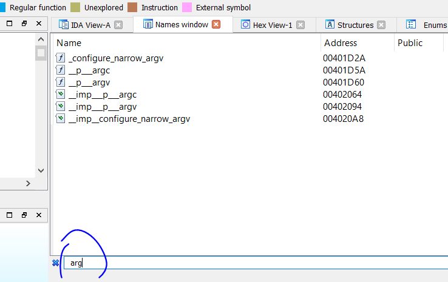
De aquí en más cuando diga en la pestaña XXX ya saben que se abre en VIEW-OPEN SUBVIEW-XXX, para no repetir tanto.
Ahí con CTRL + F filtramos escribiendo arg y vemos por ejemplo haciendo doble click en _p_argc.
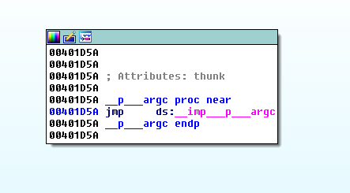
Buscando las referencias con X.
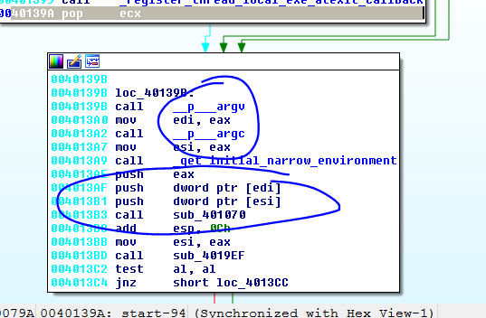
Allí vemos como llama a la función _p_argv y _p_argc y lo que devuelve se pasa su contenido a la función main que es este caso es 0x401070.
Si esta misma función la veo en el IDA mío que tengo la versión con símbolos.
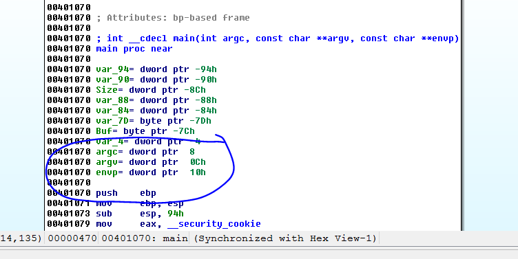
Y la referencia.
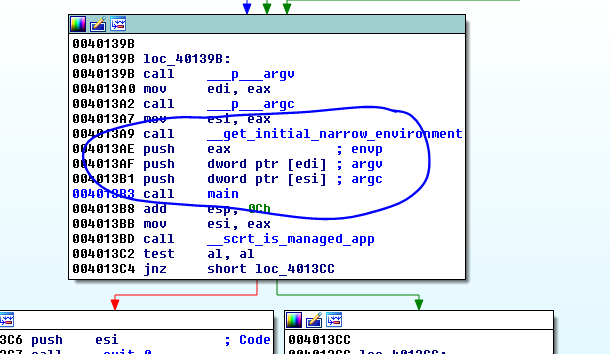
Obviamente no es la idea hacer trampa, solo chequear si el método para hallar el main se verifica y aquí es completamente cierto, buscando las referencias de los argumentos que se pasan por consola, llegamos al main.
Al renombrar el main.
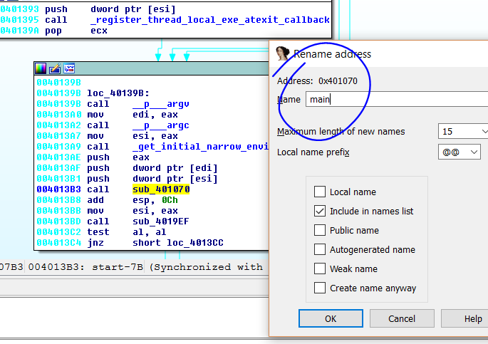
Automáticamente IDA renombra los args al decirle que dicha función es el main.
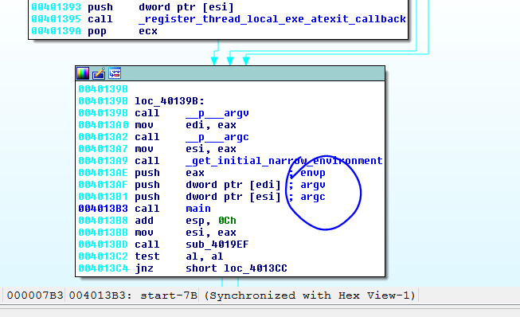
Ahora se parece un poco más a la versión con símbolos jeje.
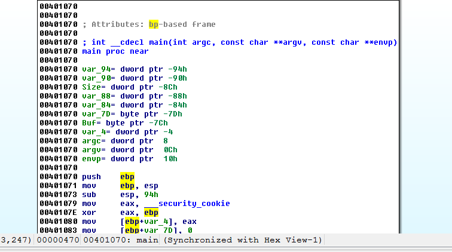
Vemos en este caso que las variables y argumentos son más numerosas que en el ejemplo anterior.
Si hacemos doble click en cualquier variable o argumento, veremos la representación estática del stack.
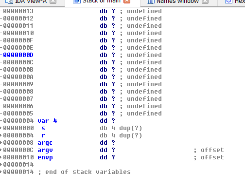
Vemos de abajo hacia arriba, lógicamente primero estarán los argumentos de la función que van siempre debajo del return address r ya que se pasan por PUSH y se guardan en el stack antes de llamar con CALL a la función, lo que a continuación guarda el return address en el stack.
Luego tenemos S o sea el STORED EBP que es el EBP que la función que llamo al main, se guarda en el stack cuando se empieza a ejecutar la función con el PUSH EBP.
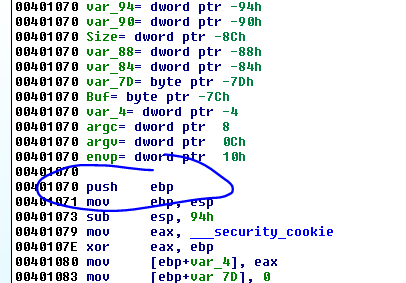
Luego mueve ESP a EBP poniendo EBP en el valor que tendrá en esta función para ser la BASE de donde se toman como referencia hacia abajo los argumentos y hacia arriba las variables, y por último el SUB ESP,0x94 mueve ESP haciendo lugar para la variables y buffers locales por eso están arriba, en este caso será 0x94 porque calculo el compilador que eso es lo que necesita para reservar el espacio para variables y buffers, según como programamos nuestra función.
ESP queda con un valor arriba de ese espacio reservado para las variables locales y EBP queda apuntando a la BASE o HORIZONTE, que divide las variables por arriba y el STORED EBP, RETURN ADDRESS y ARGUMENTOS por debajo.
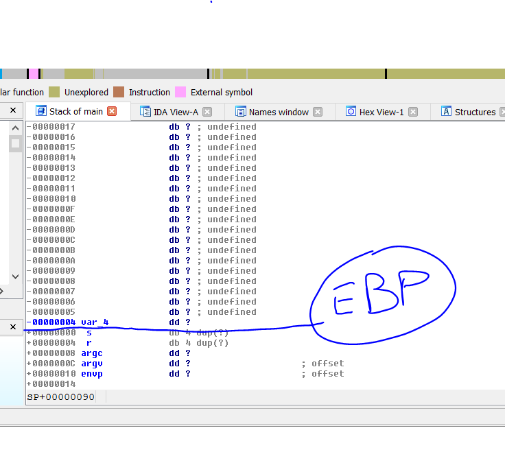
Por eso en las funciones basadas en EBP, una vez que se guarda con PUSH EBP el valor de EBP de la función que llamo, y luego se mueve ESP a EBP este queda siendo como un horizonte, por eso en la vista estática del stack, se muestra 000000000 como un horizonte y hacia arriba se ven signos menos delante y para abajo signos más.
Por eso var_4 tiene el -00000004 delante porque tomando EBP como BASE o cero la dirección matemática seria EBP-4.
Y hacia abajo argc seria EBP+8 mirando la columna de la izquierda
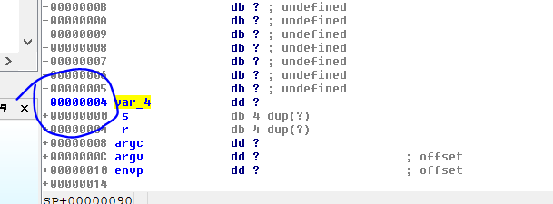
Eso se puede verificar en el listado dentro de la función main donde se usa var_4 si hacemos click derecho vemos.
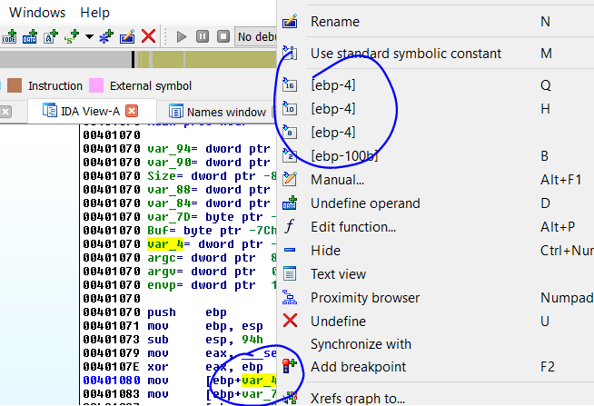
Volviendo a la distribución del stack estática.
Cuando vemos en la misma un espacio vacío donde no hay variables contiguas es porque posiblemente hacia arriba haya un BUFFER (más adelante veremos los casos en que el espacio vacío es una estructura). Ahora subamos un poco.
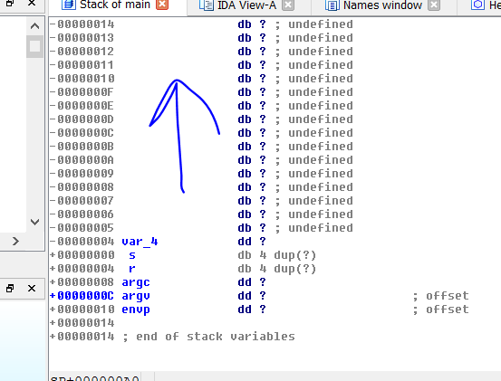
Allí vemos Buf que es la primera variable encima de la zona vacía, hacemos click derecho ARRAY.
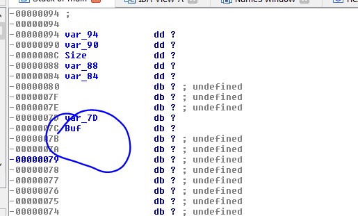
Vemos el size del ARRAY 120 ya que está compuesto de 120 elementos de 1 byte.
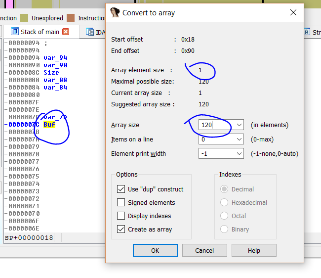
Ahora la representación del stack quedo mejor.
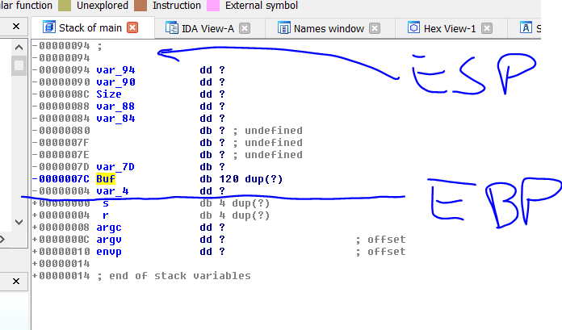
Vemos la base EBP y recordamos que una vez que EBP y ESP se igualan en MOV EBP, ESP luego se le resta a ESP el valor 0x94 y queda ESP trabajando arriba de la zona de las variables.
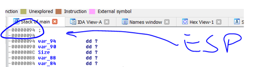
Allí vemos la zona en que queda ESP luego de ese SUB ESP, 0x94.
Ahí se ve en la izquierda -00000094 o sea que será ESP=EBP-094 obviamente luego seguirá subiendo a medida que siga trabajando, entre a otras subfunciones etc, pero siempre mientras este dentro de esta función main y hasta que salga de la misma quedara trabajando desde ese 0x94 para arriba ya que respetara la parte reservada para las variables, para no pisarlas.
Bueno una vez que ya hicimos un paneo de la vista estática del stack, vamos reverseando las variables ya que los argumentos son conocidos (argc, argv, etc)
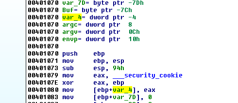
Ya vimos que var_4 es la variable de la COOKIE_SEGURIDAD o CANARY, vemos que lee el valor lo XOREA con EBP y lo guarda en el stack para protegerlo de OVERFLOWS, así que renombremos a eso.
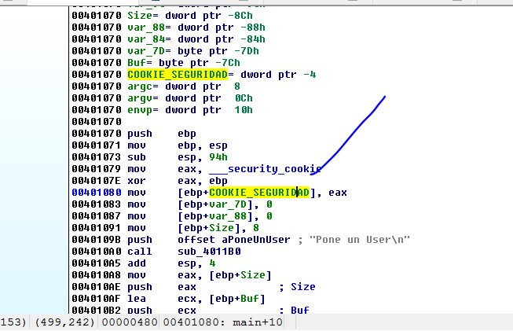
Al igual que en el ejemplo anterior la api printf al no tener símbolos no se muestra pero viendo las strings que imprime en consola y viendo la función 0x4011b0.
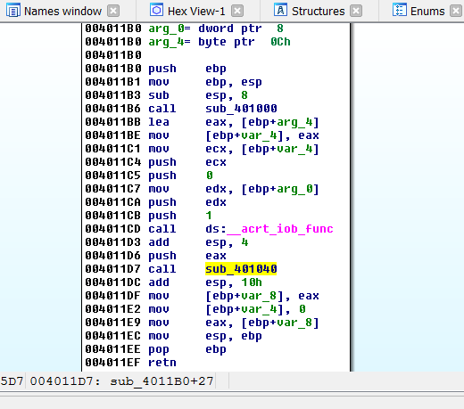
Y allí dentro en 0x401040
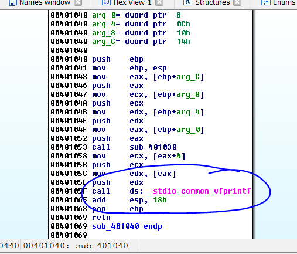
Así que renombraremos 0x4011b0 como printf.
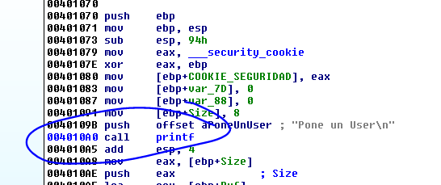
Sigamos adelante.
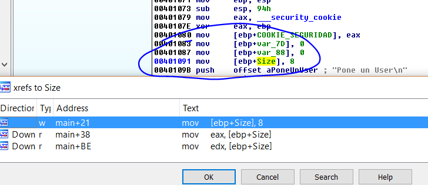
Vemos que la variable size es inicializada con 8 y nunca más cambia su valor solo hay dos lecturas entre las referencias posteriores, así que renombraremos esa variable size como size__CONST_8.
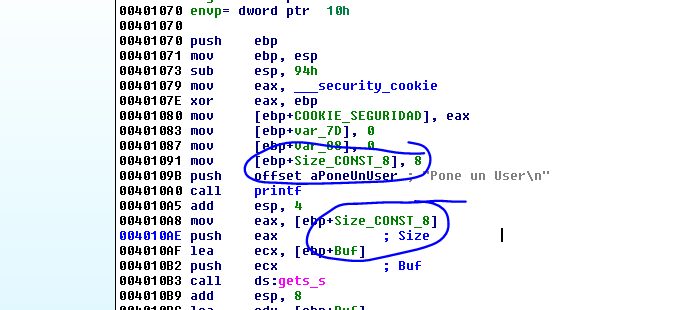
Vemos luego una llamada a get_s que es una evolución de la función gets pero con un máximo de caracteres que podes tipear, en este caso, el máximo seria 8 que se mueve a EAX y se pasa como argumento con el PUSH EAX y luego el LEA obtiene la dirección de la variable Buf o sea el BUFFER.
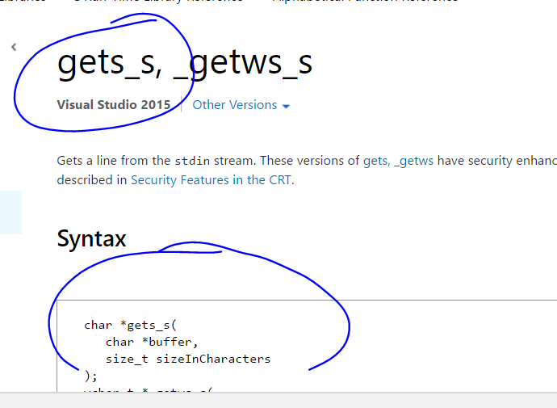
Por supuesto si entramos menos caracteres que 8 y apretamos ENTER, cortara la entrada de los mismos y retornara.
Así que sabemos que en Buf estará el User que tipeamos y que tendrá como máximo 8 caracteres.
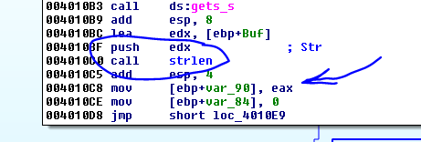
Allí vemos que luego pasa con PUSH EDX la dirección del buffer nuevamente, como argumento de la api strlen para sacar el largo de la string que está en Buf que corresponde al User, y guarda en esa var_90 el largo que devuelve en EAX, así que renombramos la var_90 con len_USER.
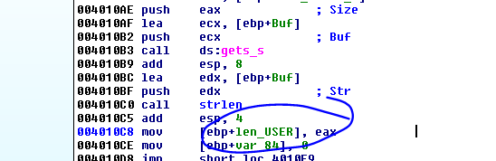
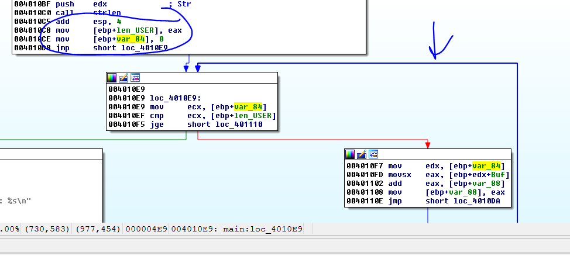
La flecha azul siempre indica un salto hacia atrás lo que puede ser un LOOP, y en 0x4010ce se inicializa el contador del LOOP var_84, inclusive se ve que en 0x4010f5 está el salto condicional que evalúa la condición de salida del mismo, el contador empieza en CERO se ira incrementando en cada ciclo y saldrá cuando sea más grande o igual al largo de lo tipeado len_USER.
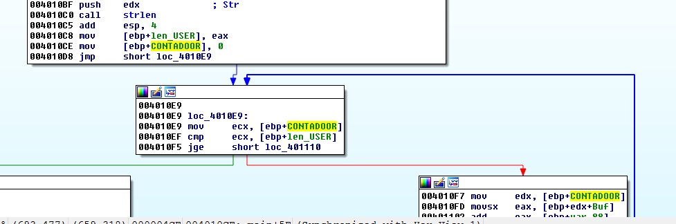
El contador se incrementa en el fin del LOOP aquí.
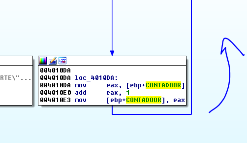
Allí mueve el valor de CONTADOR a EAX lo incrementa y luego lo vuelve a guardar
.
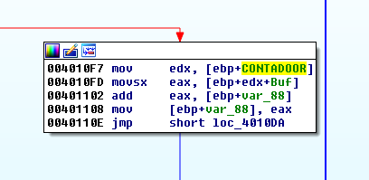
Allí mueve de EBP+EDX+BUF el primer byte del BUFFER ya que EBP+BUF se le suma CONTADOR que ahora vale cero pero se incrementara a medida que cicle el LOOP, vemos ahí que lo que hará será una sumatoria de todos los valores de los caracteres que tipee, así que a var_88 que empieza valiendo cero, se le irán sumando en cada ciclo los valores hexadecimales de cada carácter de la string del BUFFER.
Vemos una instrucción que no habíamos visto aun MOVSX.
MOVSX Y MOVZX
Ambas toman un byte y lo mueven a un registro en el caso de MOVZX rellenan con ceros los bytes superiores, mientras que en el caso de MOVSX toma en cuenta el signo del byte si es positivo o sea menor o igual que 0x7f rellena con ceros y si es negativo o sea 0x80 o mayor rellena con 0xff.
MOVZX EAX,[XXXX]
Si el contenido de XXXX es 0x40 EAX valdrá 0x00000040.
También existe por ejemplo MOVZX EAX,CL
Ese caso es similar tomara el valor del byte y lo completara con ceros los bytes superiores.
MOVSX EAX,CL
Toma en cuenta el signo del byte si CL es por ejemplo 0x40, EAX valdrá 0x00000040 y si fuera 0x85 en ese caso considera el signo y al ser negativo EAX valdrá 0xffffff85.
Igualmente, ya que tipeamos caracteres por consola las letras y números son caracteres con valores hexadecimales positivos así que no habrá problema, ira sumando los valores uno a uno y los guardará.
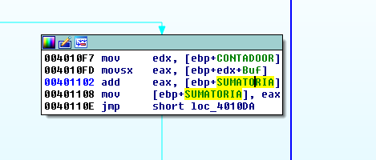
Vemos que el LOOP es una sumatoria de caracteres, los pintaremos del mismo color.
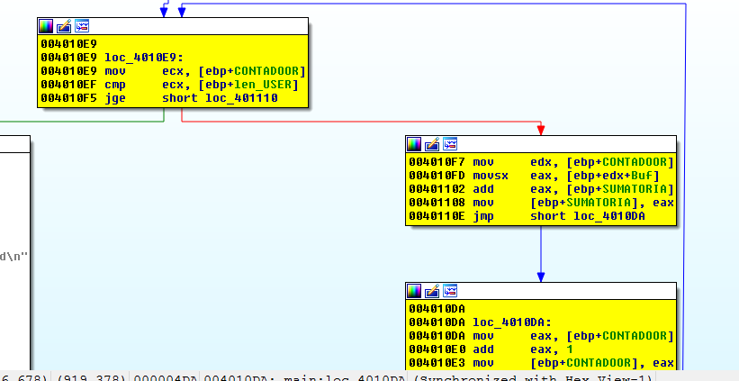
También los acerque un poco arrastrando y soltando el bloque de abajo un poco más arriba.
Hay gente que para sacarlos del medio si no tiene ganas de que le molesten los agrupa, con CTRL apretado haciendo click en la barra superior de cada bloque.
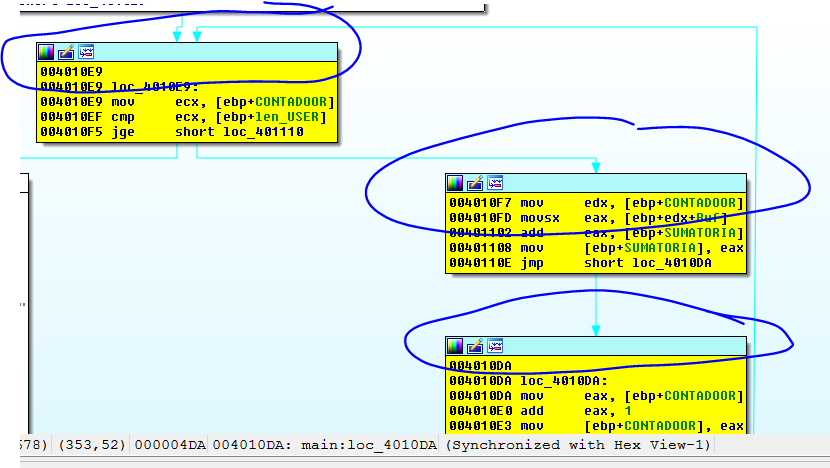
Hacemos click derecho GROUP NODES y le ponemos un nombre por ejemplo LOOP.
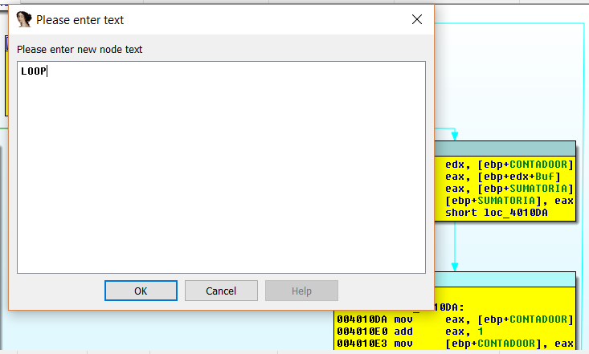
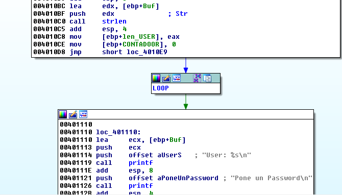
De última si uno quiere ver algo puede darle a UNGROUP NODES.
Luego imprime el USER y te dice que tipees un PASSWORD.
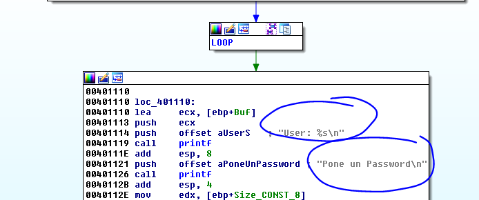
Luego llama a get_s de nuevo usando el mismo buffer y con el mismo máximo.
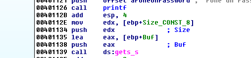
Puede reusar el mismo BUFFER para el PASSWORD, total ya calculo la SUMATORIA de los valores hexadecimales de los caracteres de USER y no usara más la string USER en sí.
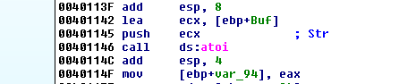
Ahora tomara el PASSWORD y lo convertirá a HEXADECIMAL como en el ejemplo anterior usando ATOI.
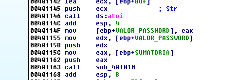
Allí le pasara el VALOR_PASSWORD con el PUSH EDX y la SUMATORIA con el PUSH EAX, esos serán los dos argumentos que se le pasan a la función 0x401010, entremos en ella.
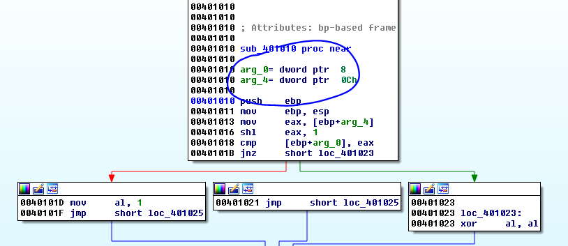
Allí vemos los dos argumentos, es obvio que el que está más abajo será VALOR_PASSWORD ya que fue el que primero se pasó con PUSH en el stack y el segundo que se pusheo será SUMATORIA, que estará más arriba.
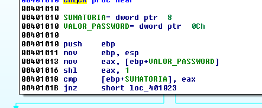
Los renombro según eso, y luego para verificar que quedo bien en el sub_0x401010 hare click derecho y elegiré SET_TYPE.
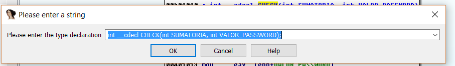
Con lo cual IDA tratara de declarar la función con sus argumentos para que se vea en la referencia y renombramos también a CHECK la función.
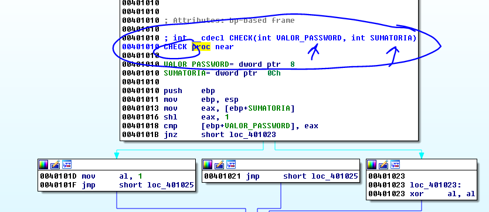
Y si vamos a la referencia.
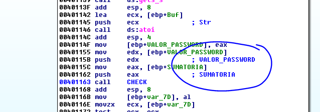
Vemos que IDA me propaga los nombres y me dice que EAX allí tiene SUMATORIA y EDX el VALOR_PASSWORD.
¿Y que hace la función CHECK con ambos?
Vemos que los compara pero antes toma el valor PASSWORD y le hace SHL EAX, 1
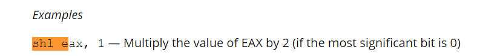
O sea sabemos que SHL es rotar a la izquierda los bits, llenando con ceros los que caen por un lado, pero específicamente SHL REG, 1 es equivalente a multiplicar por 2.
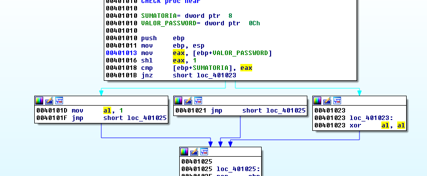
O sea que toma el valor del password lo multiplica por 2 y lo compara con la sumatoria de los caracteres del USER.
Con eso sacamos el valor numérico de un carácter, podemos hacer una fórmula que sume todos los caracteres de la string pepe que la usare como USER.
Vemos que sumatoria es 0x1aa, por el otro lado al valor que Tipeemos como password lo multiplicara por dos antes de comparar con este 0x1aa, así que el password correcto debería ser un valor que al tipear por dos me de 0x1aa.
X*2=0x1aa
Aclaremos que este programa tiene una limitación, si la sumatoria da un número impar, es imposible que haya un valor x que multiplicado por 2 nos dé como resultado un número impar, así que esos usuarios no tienen solución, solo tienen solución en este programa los usuarios que su sumatoria da positiva.
Despejamos
X=0x1aa/2 y pasado a decimal obviamente ya que con ATOI lo había pasado de decimal a HEXA.
O sea que si tipeo user pepe y pass 213 que pasara.
Por supuesto quedo ver que cuando la comparación es igual dentro de la función check.
Si no son iguales va al bloque rojo y devuelve CERO y si son iguales va al bloque verde y devuelve UNO, veamos qué pasa con ese valor de retorno.
Lo guarda allí renombremos FLAG_EXITO
Así que como vimos si es CERO va a BAD REVERSER y si es UNO va a GOOD BOY como ocurrió.
Me encantaría que lo debuggeen y chequeen todo lo que reverseamos poniendo breakpoints y viendo los valores en cada caso hasta el chequeo final.
Hasta la parte 13
Ricardo Narvaja